Belgian Biodiversity Platform
Free and Open Access to Biodiversity Data
databases, websites, GIS,...
Platform-INBO meeting
15th June 2015

André Heughebaert
Belgian Biodiversity Platform
Contents
1. About GBIF
History
- GBIF arose from a recommendation in 1999 by the Biodiversity Informatics Subgroup of the Megascience Forum, set up by the Organization for Economic Cooperation and Development (OECD).
- Vision:
"A world in which biodiversity information is freely and universally available for science, society and a sustainable future." - By encouraging and helping institutions to publish data according to common standards, GBIF enables research not possible before, and informs better decisions to conserve and sustainably use the biological resources of the planet.
1. About GBIF
Governance
- GBIF is an international open data infrastructure, funded by governments.
- It operates through a network of nodes, coordinating the biodiversity information facilities of Participant countries and organizations, collaborating with each other and the Secretariat to share skills, experiences and technical capacity.
- Secretariat is located at Copenhagen, Denmark.
- Governing board is convened once a year.
1. About GBIF
Participation
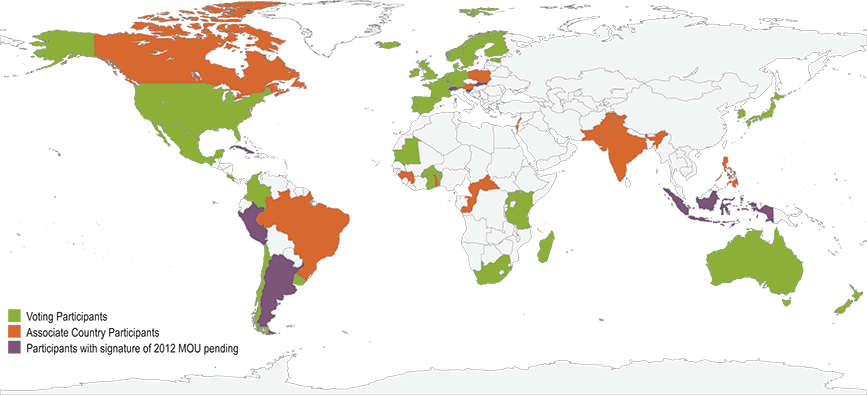
53 Countries Participants + 40 Associated Participants
2. Belgian BIF
What do we offer?
- As GBIF Belgian Node, we
- Coordinate/support Belgian BIF Community
- Offer publishing platforms : IPT, BioCase, Tapir
- Publish datasets(46) and checklists(6)
- Develop GBIF standards and tools
- Promote Open Biodiversity Data
- Encourage Scientists to use GBIF data
- Collaborate with GBIF Secretariat and other Nodes
2. Belgian BIF
Data Published
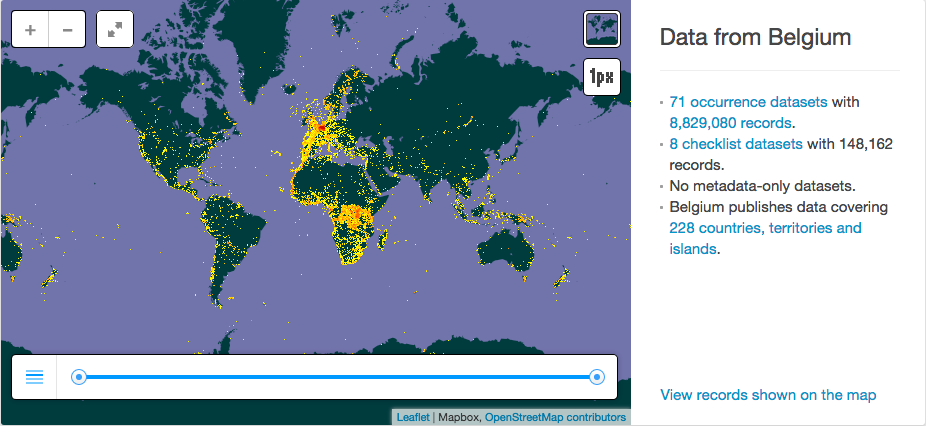
2. Belgian BIF
Community
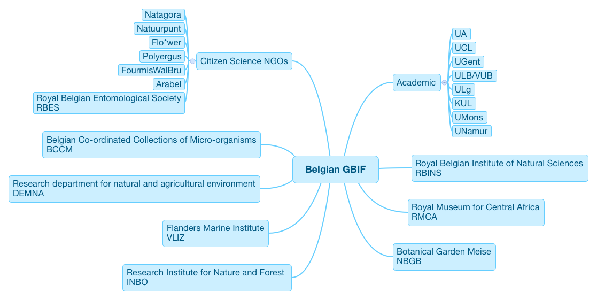
3. Data Portals
What do we offer?
- Data structuring and cleaning
- Data publishing to GBIF
- Database hosting
- Ad-hoc design and implemention
- Website hosting and related services
3. Data Portals
Examples
| 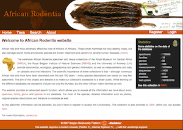 | 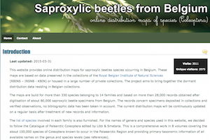 |
| 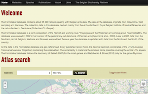 | 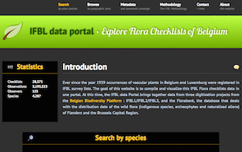 |
4. Community of Practice
What do we offer?
- Users Registry & mailing list
- Shared space & forum
- Web design and implemention (CMS)
- CoP related conference websites
- Website hosting and related services
4. Community of Practice
Examples
| 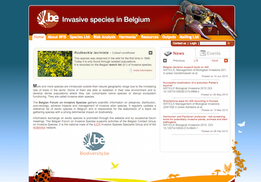 | 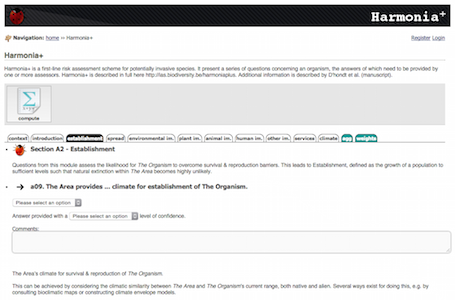 |
 |
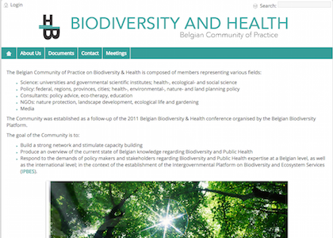 |
5. International initiatives
What do we offer?
- Users, News and resources management
- Databases hosting
- Web design and implemention (CMS)
- Conference websites
- Website hosting and related services
5. International initiatives
Examples
| 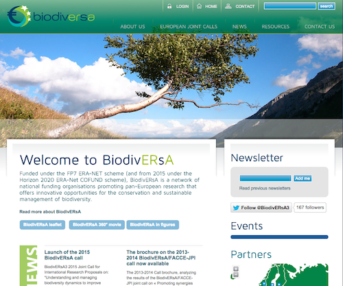 | 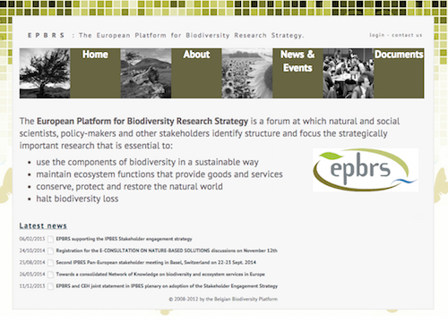 |
6. Spinoff projects
What do we offer?
- Knowledge sharing
- Technical support & advice
- Databases administration
- Website hosting and related services
- System administration
6. Spinoff projects
Examples
| 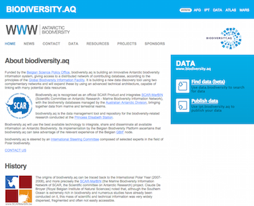 | 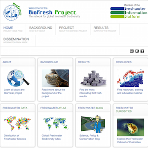 | 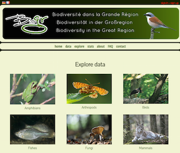 |
7. Expertise
IT Staff
- Databases, GIS, Web frameworks, Sysadmin, UNIX
- 3 FTE based at Belspo
- more than 25 years of experience
7. Expertise
Core tools


7. Expertise
but also...
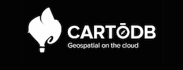


Thank you
Made with reveal.js - HTML Presentations made easy